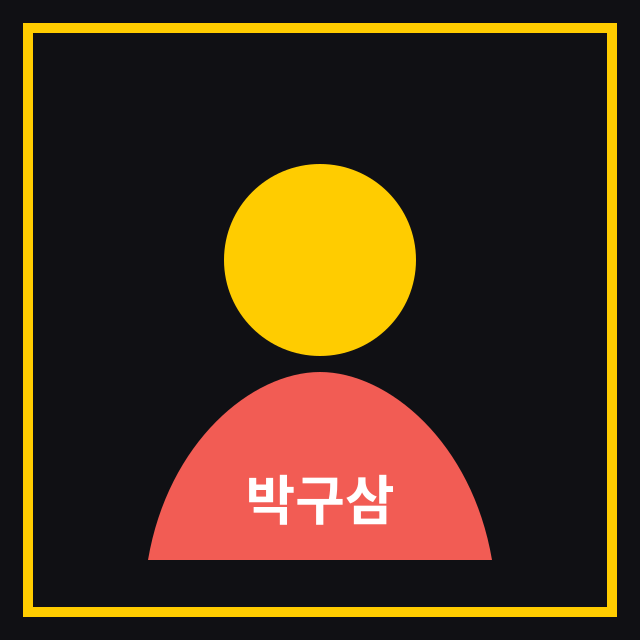

박구삼
발표 주제 추후 공개
Microsoft Build의 핵심 업데이트를 서울에서 다시 짚어보는 로컬 커뮤니티 행사입니다. AI, Agent, Copilot, Azure와 개발자 도구의 변화를 함께 살펴봅니다.
참가 신청이 행사는 .NET 커뮤니티 DOT4와 함께 Microsoft Build의 핵심 발표를 개발자 관점에서 정리합니다. Microsoft 기술 생태계 전반의 방향, 실제 업무에 적용할 수 있는 변화, 커뮤니티 네트워킹을 중심으로 진행됩니다.
발표 주제와 상세 내용은 추후 업데이트됩니다.
Microsoft Build //localhost:Seoul을 함께 만들어가는 후원사입니다.